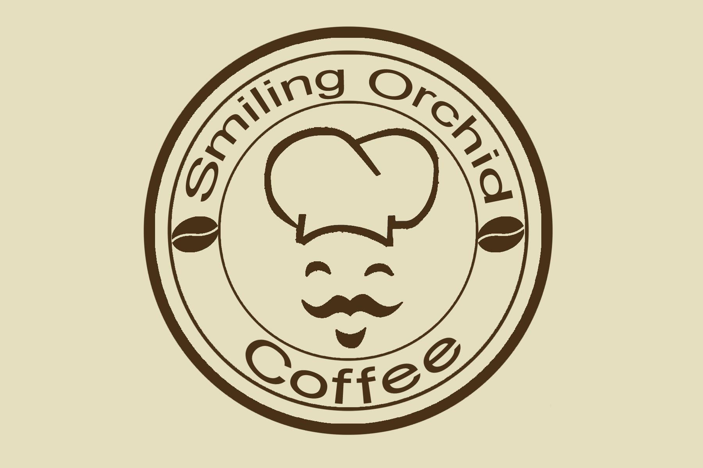

WORK EXPERIENCE
Company: Smiling Orchid Coffee
Address: B616, Jalan Jedok, 17500 Tanah Merah, Kelantan
Position: Cashier
Duration: January 2022 - February 2022
My responsibilities include receiving payments and issuing receipts, gift-wrapping packages and keeping track of all cash and credit transactions. I also have previous experience in a customer service position and good knowledge of how cash registers operate.
Position: Store Keeper
Duration: January 2021 - February 2021
My responsibilities include maintaining the stockroom's receipts, records, and withdrawals. Furthermore, inspecting deliveries for damage or irregularities and reporting them to accounting for refunds and record keeping.